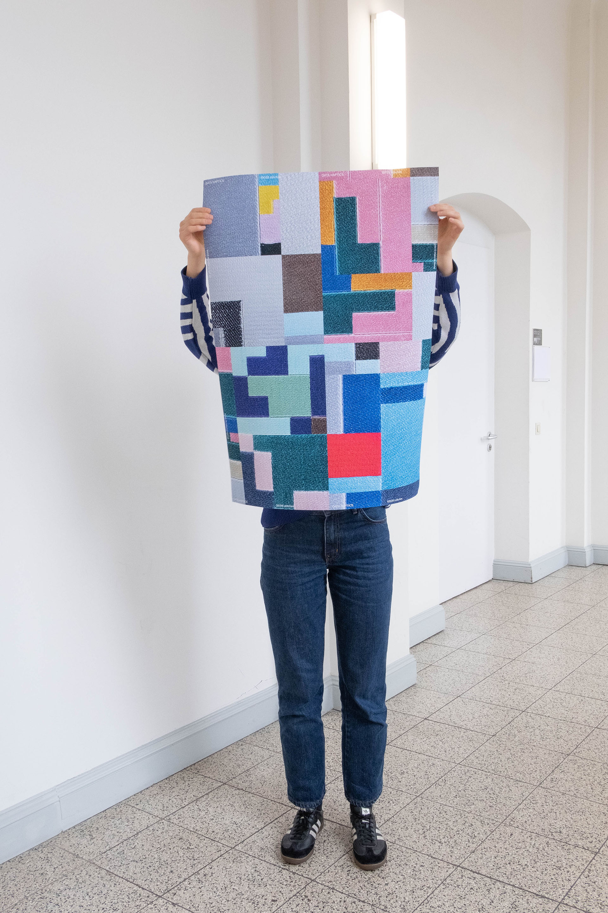
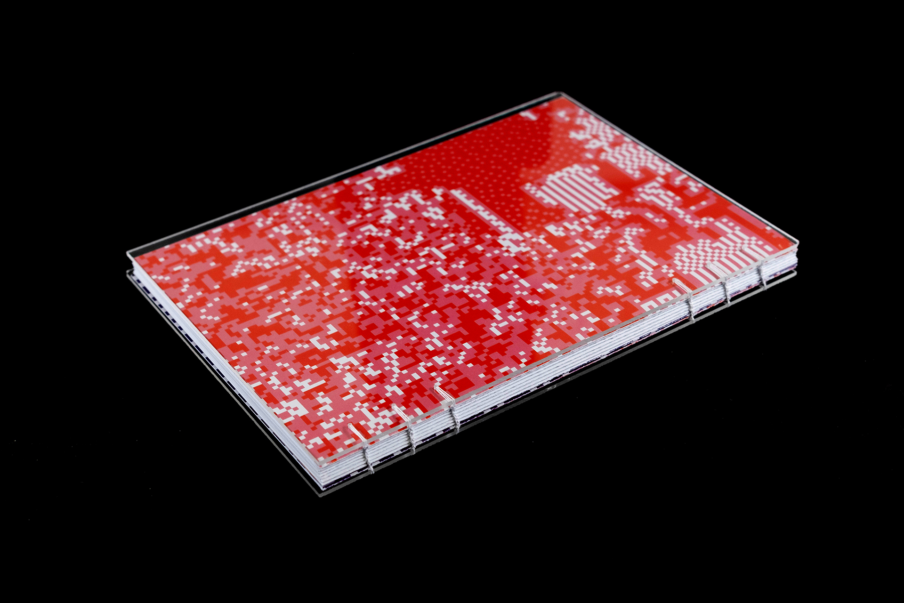
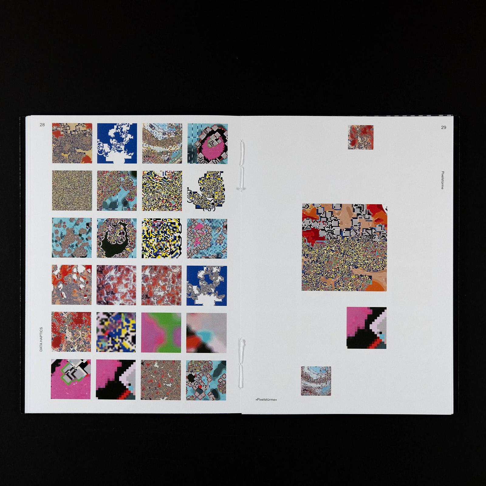
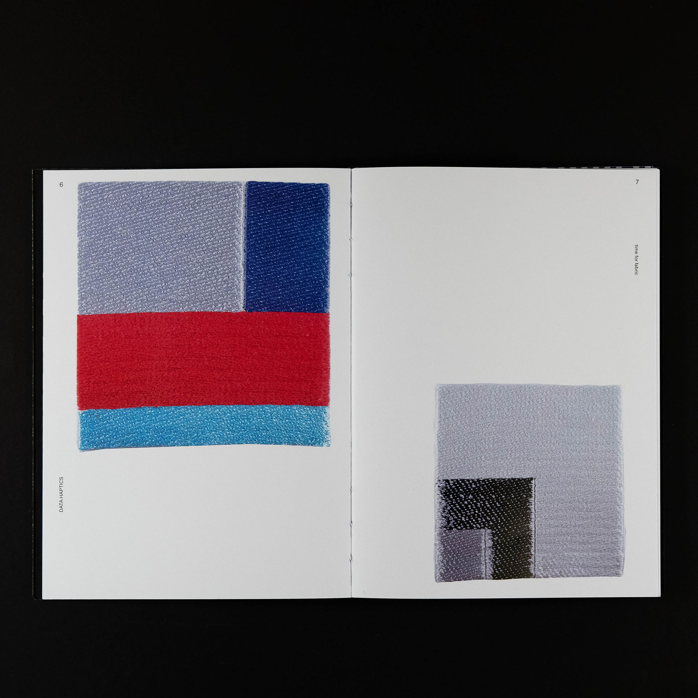

Digital data becomes tangible: stitched interpretations translate “glitches” – random, pixel-based software errors – into textile form. The focus lies on exploring new visual languages through open-ended and loosely defined processes. A logbook documents the development process of the textile works.




